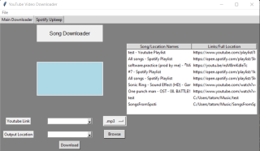
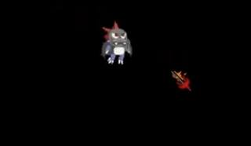

Homepage
Website Purpose
This website acts as a way to show off who I am, what i'm interested in, and what I have been involved in. The hope is that anyone reading this gets a better understanding of me!
Recent Projects

Progress Done: 80%

Progress Done: 20%
Projects Summary
My projects focus on integrating fun visuals with automation. The downloader has a mini pet that appears in the blue box and responds to the users actions. The desktop pet is meant to act as an avatar for background automations.
Recent Experiences


Experience Summary
My experience mainly focuses around me helping out day by day in the CSE building EBU3B. I go from doing work in the data center to helping people enter locked rooms.